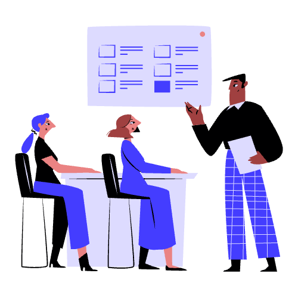
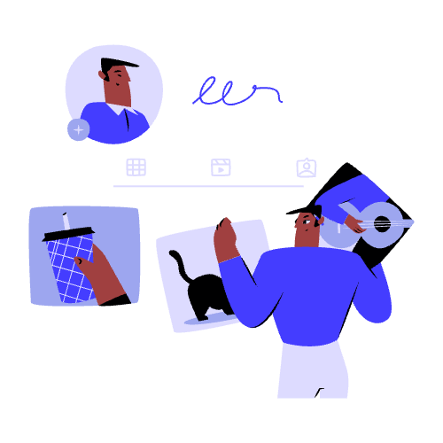
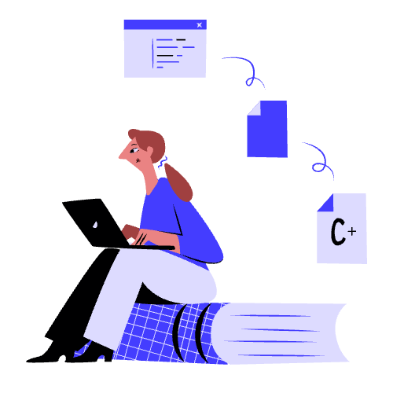

"Teaching is just debugging the human brain in real time."
Let's get in touch!
Contact me if you'd like to collaborate, pick my brain or even hire me to build your next idea!



"Teaching is just debugging the human brain in real time."

About me
I'm an educator passionate about project-based learning and using technology to influence learning processes. I regularly incorporate projects to help students bridge the knowledge gap by applying what they have learned in class into practical learning experiences.
After school, I spend my time learning new languages, trying to score goals for my soccer team, and working on coding projects.
My website is a showcase of my passions and projects. If you find my profile and projects interesting and would like to collaborate, then check out my contact information below.
Programming
Python
HTML + CSS
C++
SQL
Professional
communication
team player
problem solving
open-minded

Teach Python Fundamentals
This course is designed to be used by other educators. It guides students with no prior python experience through the most fundamental concepts. I've also included several exercises with varying degrees of difficulty, so that you can challenge all types of learners.
Educational AI chatbot
This AI chatbot uses OpenAI's API and provides educators with an easy to use and control chatbot to be used and shared with students. The app is currently an MVP with limited functionality. Click more info to learn about upcoming features.
Contact me if you'd like to collaborate, pick my brain or even hire me to build your next idea!